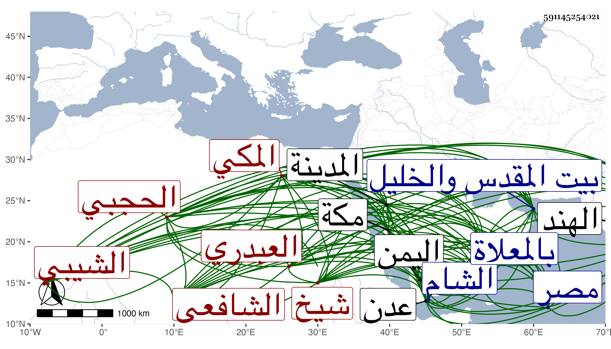

0902Sakhawi.DawLamic.ITO20230111-ara1.EIS1600.591145254021
Biography ID: 591145254021
391
عمر بن محمد بن علي بن محمد بن إدريس بن غانم بن مفرح السراج أبو حفص بن الجمال أبي راجح بن أبي الحسن بن أبي راجح بن أبي غانم العبدري الشيبي الحجبي المكي الشافعي شيخ الحجبة كسلفه . ولد في سنة اثنتي عشرة وثمانمائة بعدن من اليمن ونشأ بمكة فحفظ القرآن وتلا به على بعض القراء في التنبيه على الشمس البرماوي وفي الحاوي على النجم الواسطي بن السكاكيني وحضر في الفقه وغيره عند الجمال الشيبي القاضي وأخذ في العربية عن الجلال المرشدي والبساطي وغيرهما وسمع على ابن الجزري وابن سلامة والشمس البرماوي وأبي شعر وآخرين كأبي الفتح المراغي والتقي بن فهد ، ودخل مصر في سنة أربعين وحضر إملاء شيخنا والشام وأخذ عن ابن ناصر الدين وابنة ابن الشرائحي وابن المحب وجماعة وزار بيت المقدس والخليل وكذا زار المدينة النبوية غير مرة وولي مشيخة الباسطية المكية من واقفها في سنة اثنتين وأربعين ثم تركها في سنة أربع وخمسين وكذا ولي حجابة الكعبة عقب موت أخيه الجمال يوسف في سنة ثلاث وأربعين واستمر حتى مات وراج أمره فيها ونال وجاهة وقبولا وتأثل أموالا وبنى دورا كل ذلك مع مزيد العقل والسكون والتودد والإجلال لبيت الله وتعظيمه واحترام كثيرين له لا سيما من يجيء من الهند والعجم والروم نحوها واعتقادهم صلاحه بل ولايته مع كلام كثير فيه من جماعة أهل بلده وعلى كل حال فهو نادرة في وقته وما أظن الزمان يسمح بمثله ، وصاهر الشريف عبد اللطيف قاضي الحنابلة بمكة ثم قاضي الشافعية أبا اليمن على ابنتيهما وله من ثانيتهما أبناء وتزوج القاضي نور الدين بن أبي اليمن ابنته واستولدها أولادا ، واجتمعت به كثيرا وكان يظهر تعظيمي ومحبتي ومكنني من دخول البيت منفردا ولم يكن ذاك بالقصد ابتداء ، ولم يزل على وجاهته إلى أن عرض له فالج أبطل نصفه وأسكت فلم يتكلم وأقام كذلك أشهرا حتى مات في صبح يوم الخميس سادس عشري رجب سنة إحدى وثمانين وصلي عليه ثم دفن بالمعلاة في مشهد حافل رحمه الله وإيانا .
